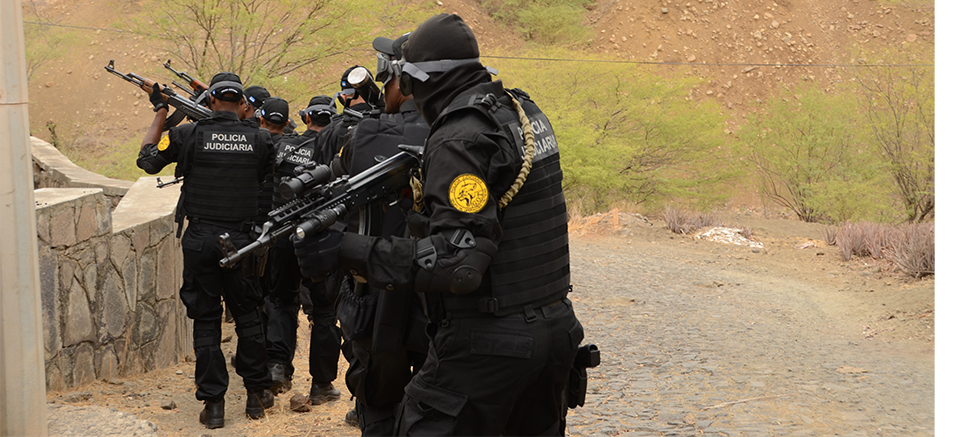

Sobre a Polícia Judiciária
A Polícia Judiciária realiza investigações e apoia o Ministério Público e o Poder Judiciário no esclarecimento de delitos, atuando com base legal em inquéritos e diligências.
Requisitos para Ingresso
- 📌 Curso superior completo;
- 🗓️ Idade mínima de 18 anos;
- 📝 Aprovação em concurso público estadual ou federal;
- 🎓 Curso de formação específico da carreira.
